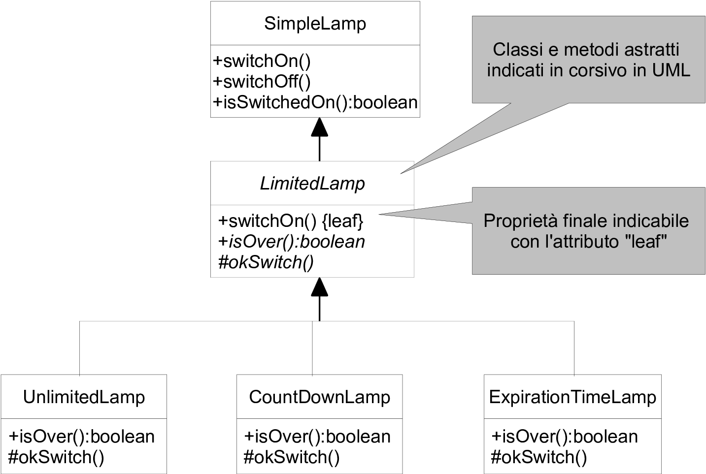

danilo.pianini@unibo.itgianluca.aguzzi@unibo.itp.baldini@unibo.itCompiled on: 2026-09-14 — versione stampabile
new non può essere usato)Serve a dichiare uno schema di strategia con un metodo “template” (spesso final) che definisce un comportamento comune, basato su metodi astratti da concretizzare in sottoclassi
abstract class C ... { ... }abstract int m(int a, String s);LimitedLamp come classe astrattaSimpleLamp col concetto di esaurimentoabstract, final, e protectedLimitedLamp

SimpleLamppublic class SimpleLamp {
private boolean switchedOn;
public SimpleLamp() {
this.switchedOn = false;
}
public void switchOn() {
this.switchedOn = true;
}
public void switchOff() {
this.switchedOn = false;
}
public boolean isSwitchedOn() {
return this.switchedOn;
}
}
LimitedLamppublic abstract class LimitedLamp extends SimpleLamp {
public LimitedLamp() {
super();
}
/* Questo metodo è finale: regola la coerenza con okSwitch() e isOver() */
public final void switchOn() { // TEMPLATE METHOD
if (!this.isSwitchedOn() && !this.isOver()) {
super.switchOn();
this.okSwitch();
}
}
// Cosa facciamo se abbiamo effettivamente acceso? Dipende dalla strategia
protected abstract void okSwitch();
/* Strategia per riconoscere se la lamp è esaurita */
public abstract boolean isOver();
public String toString() {
return "Over: " + this.isOver() + ", switchedOn: " + this.isSwitchedOn();
}
}
UnlimitedLamp/* Non si esaurisce mai */
public class UnlimitedLamp extends LimitedLamp {
/* Nessuna informazione extra da tenere */
public UnlimitedLamp() {
super();
}
/* Allo switchOn.. non faccio nulla */
protected void okSwitch() {
}
/* Non è mai esaurita */
public boolean isOver() {
return false;
}
}
CountdownLamp/* Si esaurisce all'n-esima accensione */
public class CountdownLamp extends LimitedLamp {
/* Quanti switch mancano */
private int countdown;
public CountdownLamp(final int countdown) {
super();
this.countdown = countdown;
}
/* Allo switchOn.. decremento il count */
protected void okSwitch() {
this.countdown--;
}
/* Finito il count.. lamp esaurita */
public boolean isOver() {
return this.countdown == 0;
}
}
ExpirationTimeLampimport java.util.Date;
/* Si esaurisce dopo un certo tempo (reale) dopo la prima accensione */
public class ExpirationTimeLamp extends LimitedLamp {
/* Tengo il momento dell'accensione e la durata */
private Date firstSwitchDate;
private long duration;
public ExpirationTimeLamp(final long duration) {
super();
this.duration = duration;
this.firstSwitchDate = null;
}
/* Alla prima accensione, registro la data */
protected void okSwitch() {
if (this.firstSwitchDate == null) {
this.firstSwitchDate = new java.util.Date();
}
}
/* Esaurita se è passato troppo tempo */
public boolean isOver() {
return this.firstSwitchDate != null &&
(new Date().getTime() - this.firstSwitchDate.getTime()
>= this.duration);
}
}
UseLamps
public class UseLamps {
// clausola throws Exception qui sotto necessaria!!
public static void main(String[] s) throws Exception {
LimitedLamp lamp = new UnlimitedLamp();
lamp.switchOn();
IO.println("ul| " + lamp);
for (int i = 0; i < 1000; i++) {
lamp.switchOff();
lamp.switchOn();
}
IO.println("ul| " + lamp); // non si è esaurita
lamp = new CountdownLamp(5);
for (int i = 0; i < 4; i++) {
lamp.switchOn();
lamp.switchOff();
}
IO.println("cl| " + lamp);
lamp.switchOn();
IO.println("cl| " + lamp); // al quinto switch si esaurisce
lamp = new ExpirationTimeLamp(1000); // 1 sec
lamp.switchOn();
IO.println("el| " + lamp);
Thread.sleep(3000); // attendo 1.1 secs
IO.println("el| " + lamp); // dopo 1.1 secs si è esaurita
lamp.switchOff();
lamp.switchOn();
IO.println("el| " + lamp);
}
}
/* Versione interfaccia */
public interface Counter {
void increment();
int getValue();
}
/* Versione classe astratta */
public abstract class Counter {
public abstract void increment();
public abstract int getValue();
}
Interfacce con metodi di default …
public interface I4 extends I1, I2, I3 {
void doSomething(String s);
// da Java 8
double E = 2.718282; // implicitamente public, static, final
default void doSomethingTwice(String s) { doSomething(s); doSomething(s); }
static double PI() { return Math.PI; }
}
… sembrano piuttosto simili alle classi astratte, in quanto possono fornire, in aggiunta a un contratto, alcune implementazioni di default
Tuttavia, ci sono differenze cruciali:
Objectfinalclass C extends D implements I, J, K, L { ... }
CI,J,K,L e super-interfacceD e superclassiabstract class CA extends D implements I, J, K, L { ... }
CAint i = sum(10, 20, 30, 40, 50, 60, 70);
printAll(10, 20, 3.5, new Object());
Type... argname”void m(int a, float b, Object... argname) { ... }
argname è trattato come un Type[]Typeinstanceof, …
public class VarArgs {
// somma un numero variabile di Integer
public static int sum(final Integer... args) {
int sum = 0;
for (int i : args) {
sum = sum + i;
}
return sum;
}
// stampa il contenuto degli argomenti, se meno di 10
public static void printAll(final String start, final Object... args) {
IO.println(start);
if (args.length < 10) {
for (final Object o : args) {
IO.println(o);
}
}
}
public static void main(String[] s) {
IO.println(sum(10, 20, 30, 40, 50, 60, 70, 80));
printAll("inizio", 1, 2, 3.2, true, new int[] { 10 }, new Object());
System.out.format("%d %d\n", 10, 20); // C-like printf
}
}
Definisce lo scheletro (template) di un algoritmo (o comportamento), lasciando l’indicazione di alcuni suoi aspetti alle sottoclassi.
switchOn) di una lampadina (Lamp)int compareTo(T a, T b)abstract class AbstractClass {
public void TemplateMethod() {
// ...
PrimitiveOp1();
// ...
PrimitiveOp2();
// ...
}
public abstract void PrimitiveOp1();
public abstract void PrimitiveOp2();
}
class ConcreteClass extends AbstractClass {
public void PrimitiveOp1() { /* ... */ }
public void PrimitiveOp2() { /* ... */ }
}
BankAccount
public abstract class BankAccount {
private int amount;
public BankAccount(int amount){
this.amount = amount;
}
public abstract int operationFee(); // costo bancario operazione
public int getAmount(){
return this.amount;
}
public void withdraw(int n){ // template method
this.amount = this.amount - n - this.operationFee();
}
public static void main(String[] args){
final BankAccount b = new BankAccountWithConstantFee(100);
b.withdraw(20);
IO.println(b.getAmount()); // 79
}
}
class BankAccountWithConstantFee extends BankAccount {
public BankAccountWithConstantFee(int amount) {
super(amount);
}
public int operationFee(){ return 1; }
}
public class BankAccountFixedTax extends AbstractBankAccount {
public BankAccountFixedTax(int currentAmount) {
super(currentAmount);
}
@Override
protected int getTax(int currentAmount) {
return 1;
}
}
public class BankAccountVariableTax extends AbstractBankAccount {
public BankAccountVariableTax(int currentAmount) {
super(currentAmount);
}
@Override
protected int getTax(int currentAmount) {
return (currentAmount<50 ? 1 : 0);
}
}
danilo.pianini@unibo.itgianluca.aguzzi@unibo.itp.baldini@unibo.itCompiled on: 2026-09-14 — versione stampabile